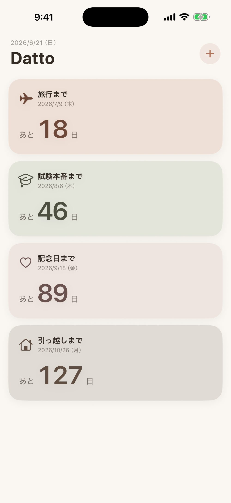
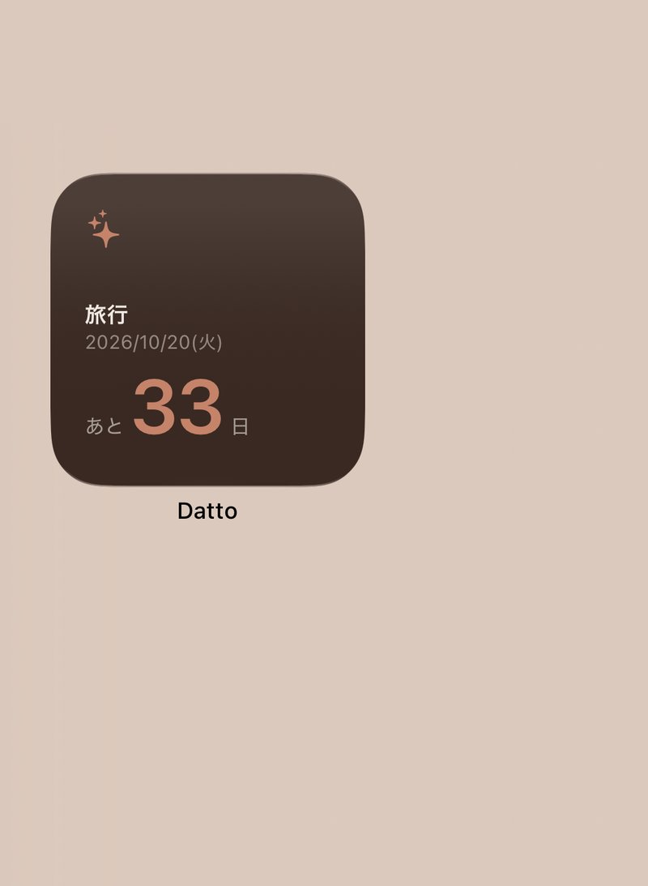

Datto・使い方ガイド・English・繁體中文
誕生日・記念日まであと何日かを、iPhoneのホーム画面に出す方法
誕生日や記念日、旅行までの残り日数をホーム画面に置いておけば、もう数えなくて済みます。iPhoneを開くたびに目に入るからです。
カウントダウンアプリDattoでの出し方を紹介します。ウィジェット1枚とイベント3件までは無料です。
1. 日付を入れる
- Dattoを開いて＋をタップします。
- イベント名と日付を入れて、保存をタップします。
手で入れなくても、取り込めます。
- 「連絡先から選ぶ」：連絡先に入っている誕生日を選べます。
- 「カレンダーから選ぶ」：この先1年のカレンダーの予定から選べます。
取り込むのは名前と日付だけです。連絡先やカレンダーの内容がiPhoneの外に出ることはありません。

2. ホーム画面に置く
- ホーム画面の空いたところを長押しします。
- 左上の「＋」（編集）から「Datto」を探します。
- Smallを選んで「ウィジェットを追加」をタップします。
どの日を出すかは、ウィジェットを長押しして「ウィジェットを編集」から、イベントを選んで決めます。

3. 誕生日を毎年くり返す（Pro）
Datto Proでは、繰り返しを「毎年」にできます。その日が過ぎると、次の年へひとりでに進みます。日付を入れ直す必要はありません。「毎月」も選べます。
Datto Proは買い切りで、サブスクではありません。イベントとウィジェットが無制限になり、Medium・Large・ロック画面のウィジェットや、節目のお知らせ（100日前・前日・当日など。音は鳴りません）も使えます。
よくある質問
無料でどこまで使えますか？イベント3件までと、そのうち1件を出すホーム画面のSmallウィジェット1枚です。広告もアカウント登録もありません。Datto Pro（買い切り）で、イベントとウィジェットが無制限になり、Medium・Large・ロック画面のウィジェットと繰り返しが使えます。
連絡先やカレンダーの中身は送られますか？送られません。Dattoに取り込むのは名前と日付だけで、連絡先やカレンダーの内容がiPhoneの外に出ることはありません。
誕生日を毎年くり返して数えられますか？Datto Proで、繰り返しを「毎年」にすると、その日が過ぎたら次の年へひとりでに進みます。
ウィジェットに出す日を変えたいです。ウィジェットを長押しして「ウィジェットを編集」をタップし、イベントを選びます。
App StoreでDattoを入手
サブスクなし・広告なし・アカウント不要・Dattoについて
English · 日本語 · 简体中文 · 繁體中文 · 한국어 · Deutsch · Français · Español · Italiano · Nederlands · Polski · Português · Русский · ไทย · Türkçe · Українська · Tiếng Việt · Bahasa Indonesia